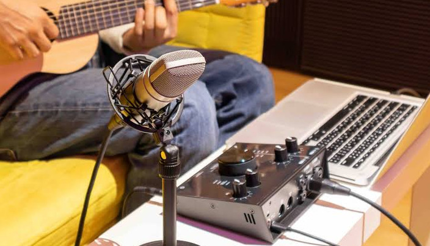

Cómo armar tu primer Home Studio sin gastar de más

Grabar maquetas, canciones o podcasts desde casa es más accesible que nunca. En nuestra tienda de Viña del Mar disponemos de la categoría Estudio y Grabación con todo lo necesario para comenzar.
1. La interfaz de audio: Focusrite Scarlett Solo
Es el corazón del estudio en casa. Te permite conectar un micrófono
XLR y una guitarra o bajo de forma simultánea, convirtiendo la señal
análoga a digital con resolución profesional de 24-bit/192kHz.
2. Captura de voz e instrumentos: Shure SM58 / Audio-Technica
AT2020
Para voces en vivo y grabación directa, el legendario dinámico
Shure SM58 o el condensador
Audio-Technica AT2020 brindan una nitidez cristalina. No
olvides agregar un Pop Filter Sennheiser MZP 40 para evitar
ruidos de aire al cantar.
3. Monitoreo preciso: Auriculares Audio-Technica ATH-M20x
Para mezclar tus pistas correctamente necesitas un sonido neutro.
Los audífonos cerrados ATH-M20x te permitirán escuchar cada
detalle de la producción sin interferencias externas.